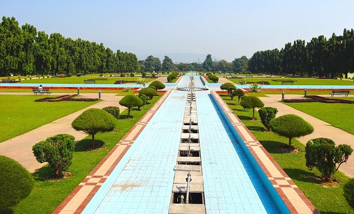

Jubliee Park
Jubilee Park, located in the heart of Jamshedpur, is a sprawling green space spread over 225 acres. It features well-manicured lawns, a lake with boating facilities, a rose garden, and a musical fountain. The park also has an amusement park, a children's play area, and a zoo. It is a popular destination for locals and tourists alike.